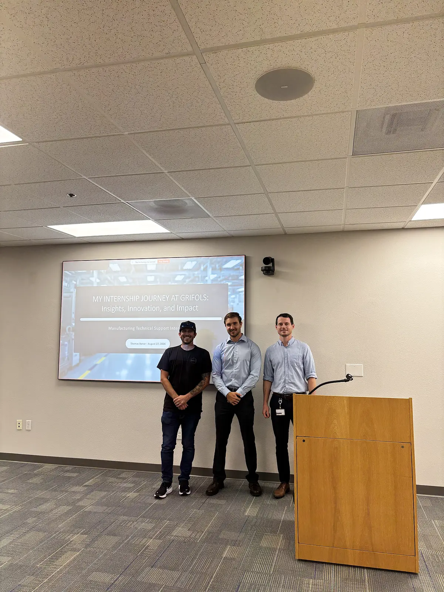

01The challenge
About 500 preventive maintenance procedures, running anywhere from weekly to every four years, lived on paper. Technicians printed each form, filled it out, scanned it, uploaded it, and filed it: thousands of pages a year, and slow to find again during an audit.
02What I did
- Digitized PMs: converted paper forms and SOPs into standardized SAP PM task lists, keeping every instruction word-for-word and in order, since these are controlled cGMP records.
- Worked with Quality Control to fix formatting and transcription errors in legacy procedures without changing any instruction content.
- Handled adoption: old procedure formats didn't fit SAP's structure, so we reworked them into one standard layout and rolled out in phases, letting technicians use both formats during a trial period.
- Spare parts: organized and documented 1,800+ parts across two buildings and updated equipment BOMs.
- Tools: SAP PM, LSQM, Excel, Microsoft Office, and Teams, every day.
03Impact
The transition is still underway, but the direction is clear: technicians complete PMs faster from any computer or iPad, records are easier to trace during audits, and management can finally see maintenance data well enough to analyze workflow and logistics. On the parts side, fewer parts go missing and techs find what they need faster.
I presented the project to the site at the end of the summer.

Equipment and internal documents are confidential, so this page describes the method and results only.
04What I learned
In a regulated plant, the documentation is part of the product. A clean digital record saves time, and it's also what lets a site prove it's doing maintenance right. The next step I proposed was mapping every PM so each part used and every minute of labor is recorded, making the true cost of maintenance visible.